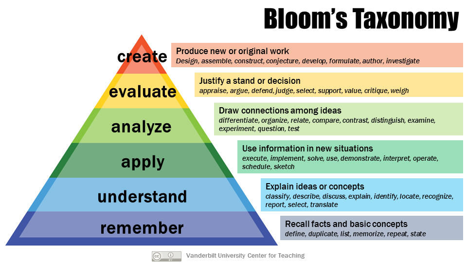

Codio Global Assessments Library¶
The Global Assessments Library is an assessment library to which all Codio users have read-only access. The library contains auto-graded assessment questions that cover a wide variety of topics, difficulties, and assessment types. We are currently populating it with assessments in:
Java
C / C++
Python
JavaScript
Data Structures (in Java)
All assessments in the global library are auto-graded, contain example solutions and answer explanations for the student, and some include teacher notes to help better convey the intended learning objective of the assessment.
Using the Global Assessments Library¶
To access the Codio Global Assessments Library, follow these steps:
Click the Assessments button and choose Assessment from the Add from Library area
On the Choose an Assessment to Add dialog, click the Library Name drop-down and choose Codio Main.
You can filter through the different assessments by tags:

Programming language
Assessment type (auto-detected)
Category (topic-level)
Content (sub-topic level)
Learning Objective (in SWBAT form - “Students will be able to….”)
Bloom’s Taxonomy level
Once you find the question you want to add to your assessment, click Add.